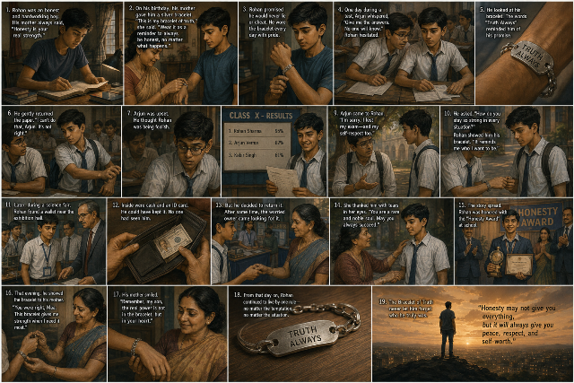

A Story of Honesty and Compassion
A missing gold bracelet, a classroom full of silence, and a teacher who chose to punish herself before punishing anyone else — because she wasn't searching for a thief. She was searching for a conscience.